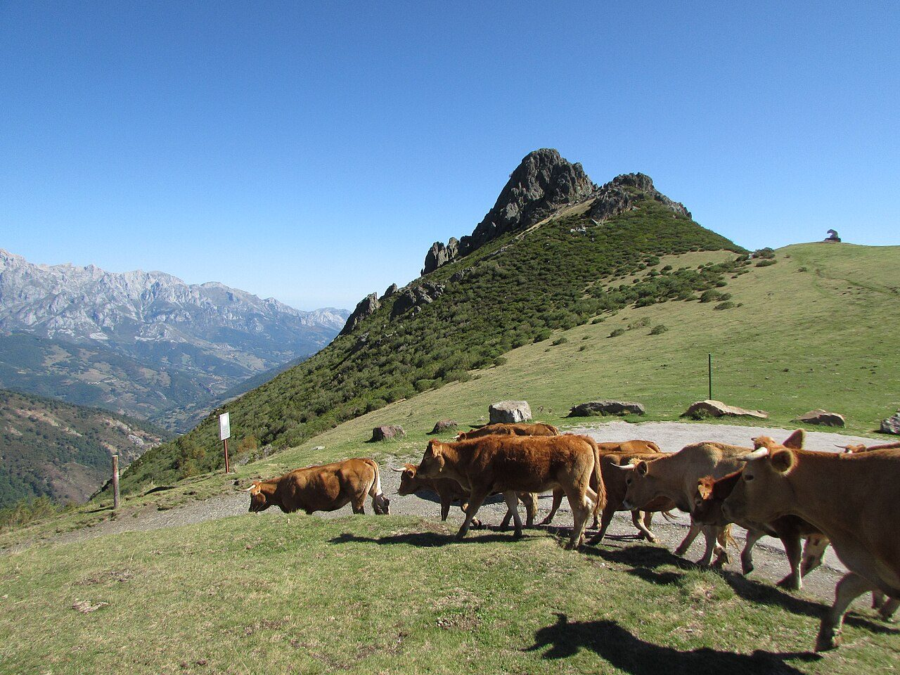

Parque Nacional de los Picos de Europa
Criterios: PN 6.1, PN 6.2
🤔 Pienso5 min
Qué hago aquí: Piensa un momento y contesta con lo que ya sabes. No pasa nada si no lo sabes: es para empezar.
Escribe tres cosas que crees que no se pueden hacer en un parque nacional.
📖 Leo y aprendo15 min
Qué hago aquí: Lee despacio, mira los dibujos y los ejemplos, y quédate con la idea clave del final.

Foto: Bikerhiker75 · CC BY-SA 4.0 · Picos de Europa, Cantabria, Cattle.jpg
El parque protege un paisaje de alta montaña caliza modelado por los glaciares, con desfiladeros, lagos, hayedos y robledales, y una fauna muy rica: rebecos, lobos, osos, buitres, águilas y el quebrantahuesos, que ha vuelto gracias a un programa de reintroducción.
✏️ Hago25 min
Qué hago aquí: Haz las actividades en orden. Empieza siempre por las básicas.
Explica por qué el Parque Nacional de los Picos de Europa es importante en la historia de la conservación en España. ¿Qué cambió en 1995?
Explica qué valores naturales protege el parque y relaciónalos con lo que aprendiste en las unidades 2 y 3 (relieve, glaciares, fauna).
El parque protege también la forma de vida de los pastores. Explica por qué los puertos de pastos y las queserías son patrimonio, aunque los haya hecho el ser humano.
El parque tiene unas 67 000 hectáreas. Expresa esa superficie en km² (1 km² = 100 ha) y compárala con la de Cantabria. ¿Qué porcentaje aproximado representa?
Más de dos millones de personas visitan el parque cada año. Explica tres problemas de la masificación y tres medidas para reducirlos. ¿Qué medida afecta menos a los vecinos?
El quebrantahuesos se extinguió y se ha reintroducido. Explica las fases de un programa de reintroducción y por qué hay que eliminar antes la causa de su desaparición.
Diseña un cartel para la entrada del parque con cinco normas para los visitantes. Explica qué valor protege cada norma.
✏️ Puedes responder escribiendo, con un dibujo o un esquema, o contándolo en voz alta.
🚀 Amplío (si quieres saber más)
Qué hago aquí: ¿Has terminado? Lee la curiosidad o elige el reto. Es voluntario.
Investiga el queso picón Bejes-Tresviso: dónde se elabora, con qué leches, por qué se cura en cuevas y qué significa tener Denominación de Origen Protegida. Explica por qué un producto así une patrimonio natural, cultural y económico.
✅ Compruebo5 min
Qué hago aquí: Contesta sin mirar la ficha y marca cómo lo llevas.